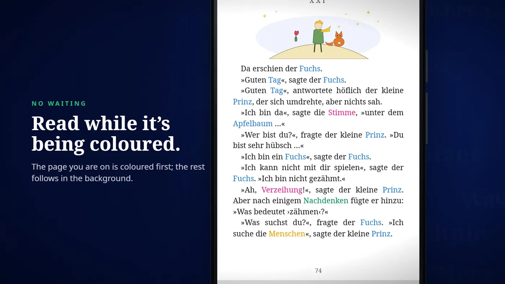
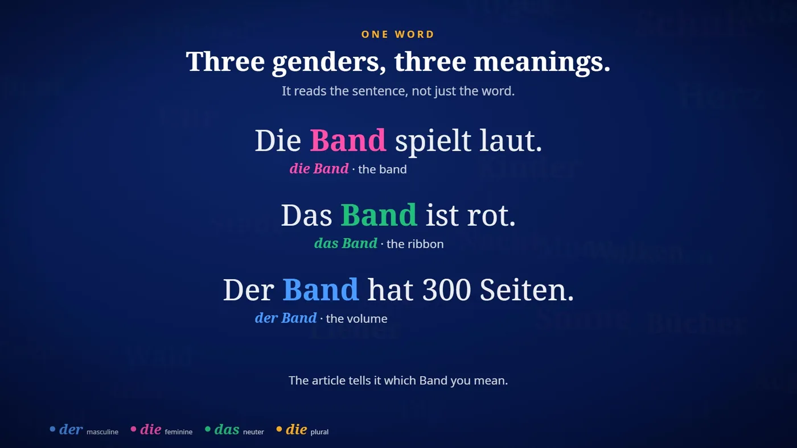
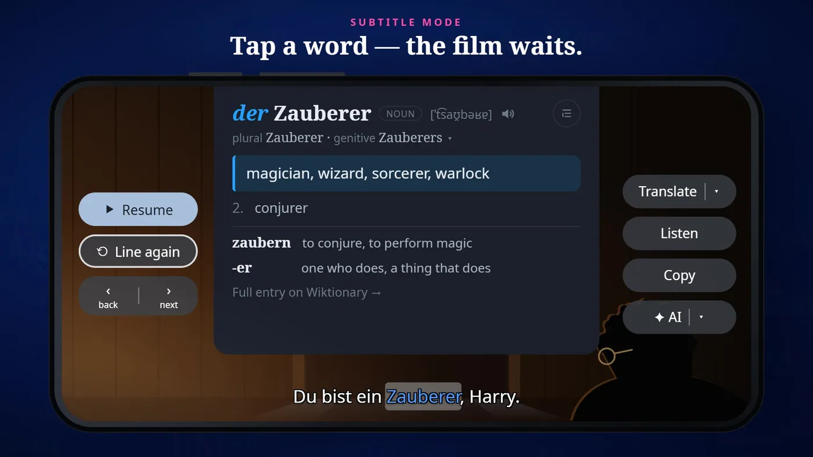
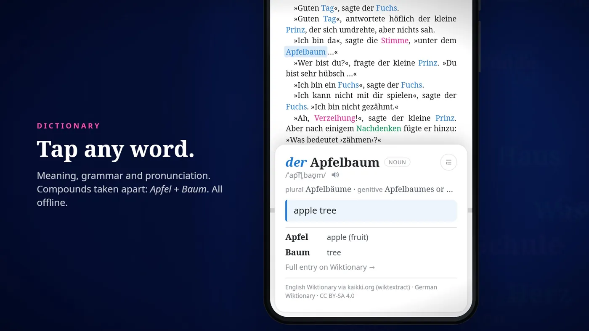
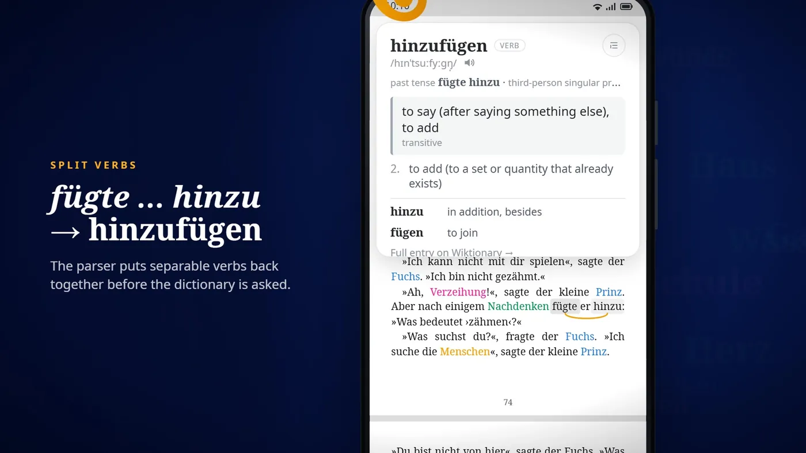
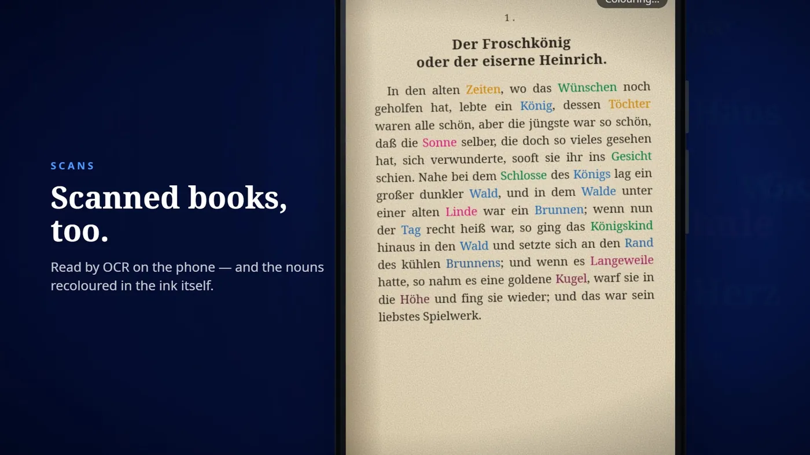

Featured project
ChamFlick DE
An offline Android app for learning German from real books and films: tap any word for meaning, grammar and pronunciation, with every noun coloured by its gender.
- When
- Aug 2026 – present
- Type
- Personal project

Overview
Reading German books and watching German films is the best practice, but constant dictionary look-ups break the flow. ChamFlick puts the dictionary inside the page and the subtitles.
What I did
- Tap any word in a PDF, EPUB, scanned page or live film subtitle to open a dictionary card with its meaning, grammar and pronunciation. Scanned books are read with OCR.
- Every noun is coloured by gender (der / die / das / plural) in text and subtitles. A sentence parser resolves ambiguous words such as Band or Messer, and nouns it is unsure about stay uncoloured instead of being guessed. The first version used spaCy's German parser, reimplemented in C++ to run on the phone.
- Update, 22 October 2026: the parser is now mmBERT-small, fine-tuned on labels from spaCy's German transformer model, with dictionary rules on top. It beats spaCy on case and separable-verb particles, and it also ranks a word's dictionary meanings by context, so the card opens on the meaning that fits the sentence.
- German-specific look-ups: separable verbs are rejoined (in “fügte … hinzu”, a tap on fügte opens hinzufügen) and compound words are split (Apfelbaum → Apfel + Baum).
- Everything runs on the phone: no account and no internet connection.
Gallery




